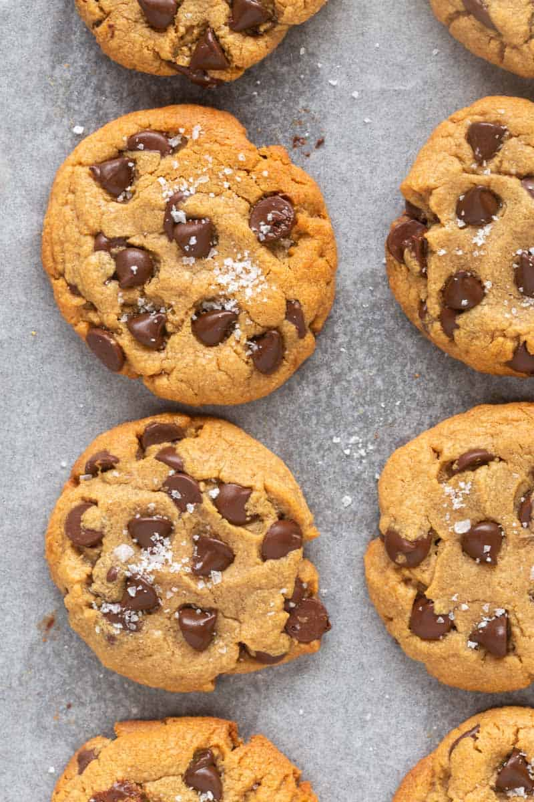

3 ingredient Cookies

Description
These 3 ingredient chocolate chip cookies are your instant fix when you
need a cookie! No flour, no eggs, no butter, and no milk needed,
they are soft and oozing with chocolate!
Ingredients
- 1 cup peanut butter smooth and creamy
- 1/3 cup maple syrup
- 1 cup chocolate chips of choice
Steps
- n a large mixing bowl, add the peanut butter and maple syrup and
mix until combined. Fold through the chocolate chips.
Cover the bowl and freeze for an hour or refrigerate for two hours.
- Preheat the oven to 180C/350F. Line a large baking sheet with parchment paper.
- Remove the mixing bowl from the freezer. Using your hands,
form 12 balls of dough and place them onto the lined sheet.
Bake the cookies for 10-12 minutes, or until they are firm
around the edges.
- Remove the cookies from the oven and let them cool completely.